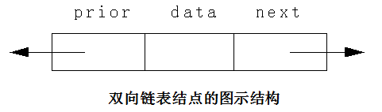

双向链表：
双向链表是每个结点除后继指针外还有一个前驱指针。和单链表类同，双向链表也有带头结点结构和不带头结点结构两种，带头结点的双向链表更为常用；另外，双向链表也可以有循环和非循环两种结构，循环结构的双向链表更为常用。
双向循环链表：
在双向链表中，每个结点包括三个域，分别是element域、next域和prior域，其中element域为数据元素域，next域为指向后继结点的对象引用，prior域为指向前驱结点的对象引用。下图为双向链表结点的图示结构：

如下图是带头结点的双向循环链表的图示结构。双向循环链表的next和prior各自构成自己的单向循环链表：

在双向链表中，有如下关系：设对象引用p表示双向链表中的第i个结点，则p.next表示第i+1个结点，p.next.prior仍表示第i个结点，即p.next.prior == p；同样地，p.prior表示第i-1个结点，p.prior.next仍表示第i个结点，即p.prior.next == p。下图是双向链表上述关系的图示：

双向循环链表的插入过程：
下图中的指针p表示要插入结点的位置，s表示要插入的结点，①、②、③、④表示实现插入过程的步骤：

循环双向链表的删除过程：
下图中的指针p表示要插入结点的位置，①、②表示实现删除过程的步骤：

2、双向循环链表的代码实现：
(1)List.java:
package com.yc.list;
/**
* Created by yucheng on 2018/8/22.
* 设计线性表抽象数据类型的Java接口：可以查看JDK源码进行对比
* 1.求元素个数
* 2.插入
* 3.删除
* 4.查找
* 5.判断是否为空
*
* 注意：此List万不可与java.util.List弄错
* 在导入包的时候要留意
*/
public interface List {
// 获取线性表长度
public int size();
// 判断线性表是否为空
public boolean isEmpty();
// 插入元素
public void insert(int index,Object obj) throws Exception;
//删除元素
public void delete(int index) throws Exception;
//获取指定位置的元素
public Object get(int index) throws Exception;
}
(2)Node.java:
package com.yc.doubleCycleLinkList;
/**
* Created by yucheng on 2018/8/24.
*/
public class Node {
Object element;// 数据域
Node next; // 后进指针域
Node prior; // 前驱指针域
// 头结点构造器
public Node(Node next) {
this.next = next;
}
// 非头结点的结点构造器
public Node(Object element, Node next) {
this.element = element;
this.next = next;
}
public Object getElement() {
return element;
}
public void setElement(Object element) {
this.element = element;
}
public Node getNext() {
return next;
}
public void setNext(Node next) {
this.next = next;
}
public Node getPrior() {
return prior;
}
public void setPrior(Node prior) {
this.prior = prior;
}
@Override
public String toString() {
return element.toString();
}
}
(3)DoubleCycleLinkList.java:
package com.yc.doubleCycleLinkList;
import com.yc.list.List;
/**
* Created by yucheng on 2018/8/24.
*/
//单向链表类
public class DoubleCycleLinkList implements List {
Node head; //头指针
Node current;//当前结点对象
int size;//结点个数
//初始化一个空链表
public DoubleCycleLinkList() {
//初始化头结点，让头指针指向头结点。并且让当前结点对象等于头结点。
this.head = current = new Node(null);
this.size = 0;//单向链表，初始长度为零。
this.head.next = head;
this.head.prior = head;
}
//定位函数，实现当前操作对象的前一个结点，也就是让当前结点对象定位到要操作结点的前一个结点。
public void index(int index) throws Exception {
if (index < -1 || index > size - 1) {
throw new Exception("参数错误！");
}
//说明在头结点之后操作。
if (index == -1)
return;
current = head.next;
int j = 0;//循环变量
while (current != head && j < index) {
current = current.next;
j++;
}
}
@Override
public void delete(int index) throws Exception {
// TODO Auto-generated method stub
//判断链表是否为空
if (isEmpty()) {
throw new Exception("链表为空，无法删除！");
}
if (index < 0 || index > size) {
throw new Exception("参数错误！");
}
index(index - 1);//定位到要操作结点的前一个结点对象。
current.setNext(current.next.next);
current.next.setPrior(current);
size--;
}
@Override
public Object get(int index) throws Exception {
// TODO Auto-generated method stub
if (index < -1 || index > size - 1) {
throw new Exception("参数非法！");
}
index(index);
return current.getElement();
}
@Override
public void insert(int index, Object obj) throws Exception {
// TODO Auto-generated method stub
if (index < 0 || index > size) {
throw new Exception("参数错误！");
}
index(index - 1);//定位到要操作结点的前一个结点对象。
current.setNext(new Node(obj, current.next));
current.next.setPrior(current);
current.next.next.setPrior(current.next);
size++;
}
@Override
public boolean isEmpty() {
// TODO Auto-generated method stub
return size == 0;
}
@Override
public int size() {
// TODO Auto-generated method stub
return this.size;
}
}
(4)Test.java:
package com.yc.doubleCycleLinkList;
/**
* Created by yucheng on 2018/8/24.
*/
public class Test {
public static void main(String[] args) throws Exception {
DoubleCycleLinkList list = new DoubleCycleLinkList();
for (int i = 0; i < 10; i++) {
int temp = ((int) (Math.random() * 100)) % 100;
list.insert(i, temp);
System.out.print(temp + " ");
}
list.delete(4);
System.out.println("\n------删除第五个元素之后-------");
for (int i = 0; i < list.size; i++) {
System.out.print(list.get(i) + " ");
}
}
}
运行效果：